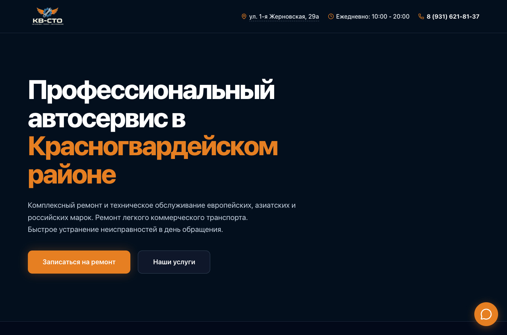

Публичные страницы и запись
Информация об услугах, контакты, формы обращения и записи; переход к дальнейшей работе с заявками.
ПРОЕКТ / 02 / БИЗНЕС-ПРОЕКТ
Один инструмент для заявок, заказов и ежедневной работы сотрудников
Контекст
Автосервису нужно одновременно принимать обращения, вести запись клиентов, отслеживать заказы, распределять работу и рассчитывать выплаты.
Для сотрудников важны единая история заказов, понятные статусы и доступ к актуальному расписанию. Поэтому сайт и внутреннюю систему я объединил в одно приложение.
Решение
Публичная часть помогает клиенту узнать об услугах и оставить заявку. Рабочая CRM продолжает этот сценарий: сотрудники видят запись и заказ, управляют этапами работ и фиксируют расчёты.
Реализованные блоки
Информация об услугах, контакты, формы обращения и записи; переход к дальнейшей работе с заявками.
Работа с карточками заказов, статусами, историей и печатными формами.
Записи, распределение задач, интерфейсы для разных рабочих ролей.
Учёт оплат и расчётов с сотрудниками; Telegram-интеграции для событий.
Действующий проект
Скриншот публичной главной страницы рабочего сайта, снятый 19 октября 2026 года. Доступ к внутренней CRM не требуется.

Демонстрация интерфейса
Отдельная демонстрационная версия по мотивам рабочего приложения. Все клиенты, заказы и суммы вымышлены; связь с действующей CRM отсутствует.
Демонстрационная реконструкция. Переключайтесь между доской заказов, карточкой заказа и календарём. Пример работает прямо в браузере.
Открыть демо CRMЛичный вклад
Изучил процессы автосервиса, спроектировал приложение, разработал его с помощью ИИ, проверял работу интерфейсов и продолжаю сопровождение.
Рабочее приложение используется автосервисом для учёта заказов и повседневных операций. Это действующий бизнес-проект; количественные показатели пока не публикуются без замеров.
В интерактивной реконструкции можно последовательно открыть доску заказов, карточку заказа и календарь. Все данные вымышлены; демо показывает логику интерфейса, а не операции с рабочей базой.
Отдельная публичная витрина с демонстрационным кодом и выбранными фрагментами реализации: CRM Showcase на GitHub ↗. Это не полный production-репозиторий.